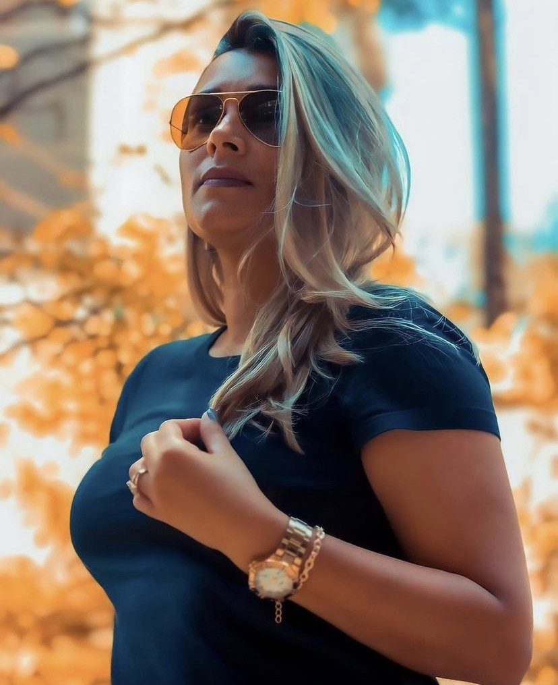

Female Essays


Women seek to do a photo shoot for several reasons, whether to celebrate a moment, raise their self-esteem, discover their sensuality, changes in visa, professional, update their Instagram feed, etc. We know that nowadays cell phones do everything and also take good quality photos, but you can be sure that it will never overcome the feelings, emotions and sensations and look of the professional photographer, that's a fact.
Corporate Essays

Corporate essays aim to create images, whether of environments, work situations or portraits that represent the company's concepts, values and mission. They are ideal for use on websites, reports and publications, social networks and informative folders.
Pregnant Essays

The maternity shoot is a photo shoot to record the baby's waiting phase. The new and cutest member of the family is coming. And as he grows, you'll want to make multiple records of each phase throughout his life.
And the maternity shoot is the great start, and it can be done in many ways and styles. Everything will depend on your choice, your look and your personality. Especially because there are types of essays of the most varied styles. It can be done just for the mother, the couple or with the older children. You can even include your pets, this will depend on how the woman or couple wants their rehearsal to be.
Couple Essays


The Couple essay is recommended for all couples who are partners, best friends, who love each other and have a beautiful union story! Living a love is simple, but telling this story is fundamental. Photo souvenirs are the most beautiful heirlooms you can leave your family.